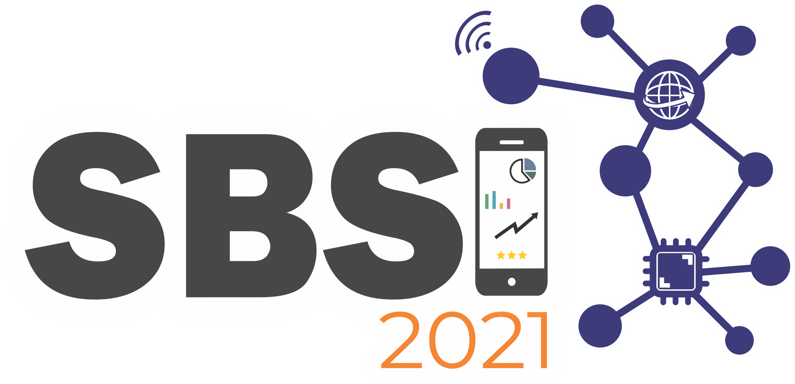
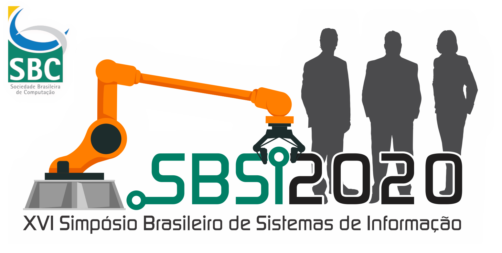

CTDSI 2021
7 de Junho de 2021
Concurso de Teses e Dissertações em Sistemas de Informação CTDSI 2021
Premiado como uma das três melhores pesquisas em Sistemas de Informação no país em 2020.
Autores: Rafael Escalfoni e Jonice Oliveira.

SBSI 2020
6 de Novembro de 2020
Simpósio Brasileiro de Sistemas de Informação 2020
Apresentamos na trilha principal do evento o trabalho intitulado Analyzing Social Relations in Startup Ecosystems
Autores: Rafael Escalfoni, Mônica F. da Silva e Jonice Oliveira.
EISI 2020
6 de Novembro de 2020
Encontro de Inovação em Sistemas de Informação 2020
Apresentamos um demo sobre a ferramenta Coral. Artigo: Coral Platform: The Smart Startup Ecosystem Tool
.
Autores: Rafael Escalfoni, Mônica F. da Silva e Jonice Oliveira.